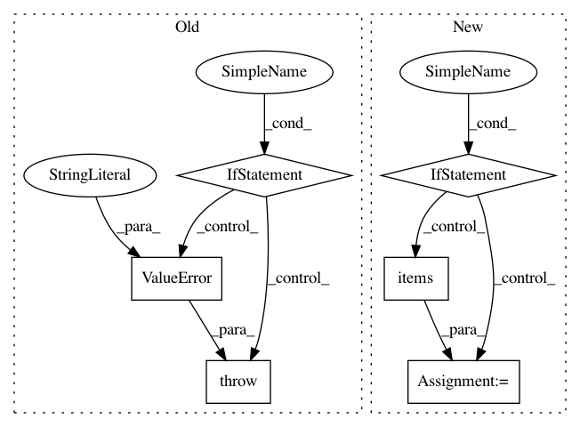

b42b39742cf6dffe0d3d555e056d276c960b8ac3,reframe/core/fields.py,TimerField,__set__,#TimerField#Any#Any#,108
Before Change
raise ValueError("timer field must have "
"non-negative values")
if m > 59 or s > 59:
raise ValueError("minutes and seconds in a timer "
"field must not exceed 59")
// Call Field"s __set__() method, type checking is already performed
Field.__set__(self, obj, value)
class AbsolutePathField(TypedField):
After Change
def __set__(self, obj, value):
self._check_type(value)
if value and type(value) is not datetime.timedelta:
try:
time_dict = re.match(r"^((?P<days>\d+)d)*"
r"((?P<hours>\d+)h)*"
r"((?P<minutes>\d+)m)*"
r"((?P<seconds>\d+)s)*$",
value).groupdict()
except AttributeError:
raise Exception("invalid format")
value = datetime.timedelta(**{k:int(v) for k, v in time_dict.items() if v})
// Call Field"s __set__() method, type checking is already performed
Field.__set__(self, obj, value)
class AbsolutePathField(TypedField):
In pattern: SUPERPATTERN
Frequency: 3
Non-data size: 6
Instances
Project Name: eth-cscs/reframe
Commit Name: b42b39742cf6dffe0d3d555e056d276c960b8ac3
Time: 2020-01-27
Author: rafael.sarmiento@cscs.ch
File Name: reframe/core/fields.py
Class Name: TimerField
Method Name: __set__
Project Name: dnouri/skorch
Commit Name: 53ef00376510ee9ba4506918db06b25dad4a7ea4
Time: 2017-07-31
Author: benjamin.bossan@ottogroup.com
File Name: inferno/callbacks.py
Class Name: BestLoss
Method Name: initialize
Project Name: tensorflow/datasets
Commit Name: cc82bb5aac7bc19b514346e3c1983c76f8564751
Time: 2019-01-07
Author: epot@google.com
File Name: tensorflow_datasets/core/features/sequence_feature.py
Class Name: SequenceDict
Method Name: encode_example